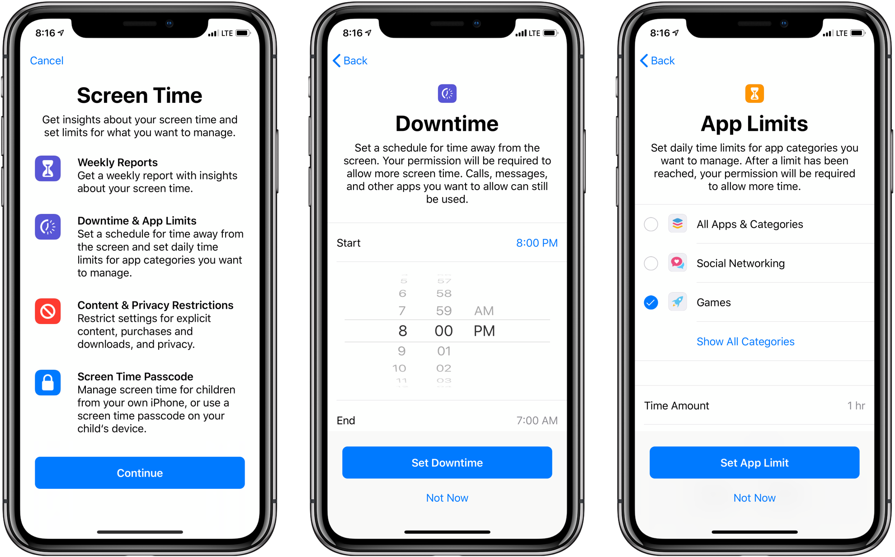

Assignment 2 - Reflection on Digital Wellbeing
What is Digital Wellbeing?
Digital wellbeing is a difficult term to define. In various studies concerning measuring, analyzing, and critiquing digital wellbeing, the overarching message of the phrase is how healthy a user is, both physically and mentally, in their engagement with technology. We spend an overwhelming amount of time being surrounded by technology. Some reasons are: (1) expectations of outside forces, such as checking your email after work and responding to Slack messages outside of class hours, (2) habit, (3) fear of missing out.[1] Although technology helps us stay engaged and up to date with information, this can also be overwhelming and people find it difficult to disconnect from. Especially with the increase in the reliance on technology upon COVID-19, it is more important than ever that self care overall well being includes how we behave on the Internet towards each other and how much time we spend our days digitally.

From my experience, the aspect of digital wellbeing that changed the most since COVID-19 is screen time, which affects both physical and mental health as well as the engagement level.
In June 2018, Apple introduced new features to the iOS 12 that would reduce interruptions and manage screen time. [2]
As of November 2020, some of its features are:
- Downtime: set a schedule for time away from the screen
- App Limits: set daily time limits for individual apps or categories
- Communication Limits: limited to Apple communication apps, such as Phone, FaceTime, and iMessage; allows users to schedule a communication downtime where they can block off contacts for a certain amount of time
- Always Allowed: choose apps that can be available anytime, overriding downtime